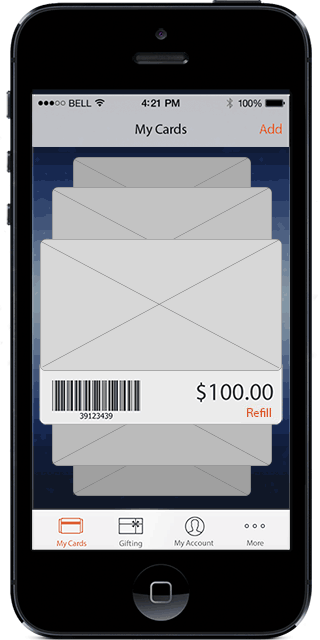
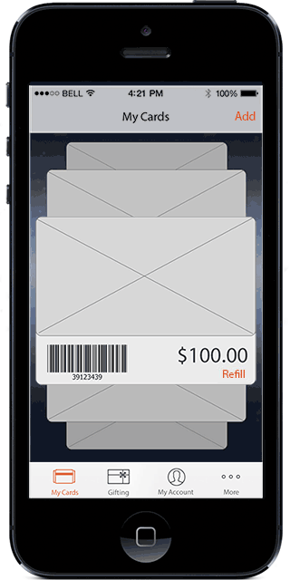
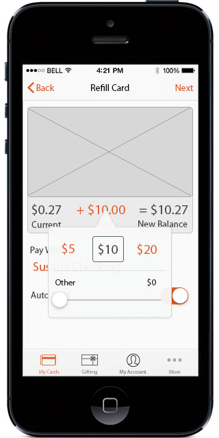

{API Mobile Demo: UX, Visual Design, Native App;}
 One of my first tasks at Incomm Digitial Solutions was to design a native iOS application to showcase the functionality of the brand new API.
The API supported importing gift cards, purchasing new cards for yourself or others, redeeming your cards at checkout, and reloading your cards with additional value.

iOS7 had just been released, so I got to explore the new OS features, along with dynamic data calls from our system, to offer users a smooth, custom experience.
